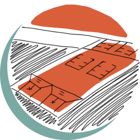
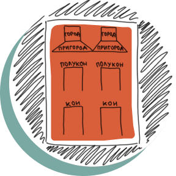
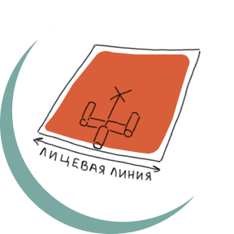
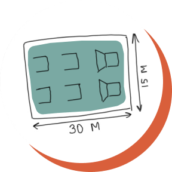
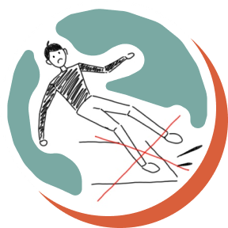
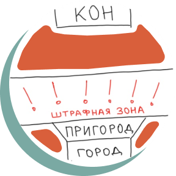

Как играть в городки?
-

На площадке, называемой «городом», ставят 15 фигур. Каждая из них сложена из пяти деревянных столбиков — «городков». Задача игрока — бросить биту так, чтобы выбить их за пределы поля.
-
В городки можно играть один на один или команда на команду. В каждой команде должно быть не менее пяти игроков (и бывает запасной).
-
Победителем считается игрок или команда, которые потратили на выбивание фигур меньше бит.
-

Площадь, ограниченная двумя боковыми линиями и передней планкой, из пределов которой производятся броски по фигурам, называется «коном». Площадь, из которой делаются броски после выбивания хотя бы одного городка, — это «полукон».
-

Фигуры начинают выбивать с кона — дальней линии. В каждой партии может разыгрываться 6, 10 или 15 фигур. Все фигуры, кроме 15-й, строятся на лицевой линии города.
-

Площадку для городков важно разместить на ровном горизонтальном участке размером 30 на 15 метров.
-

Поверхность конов и полуконов должна быть достаточно твёрдой, чтобы обувь игроков не скользила. Лучшим покрытием служит асфальт.
-

А ещё существует штрафная зона. Её засыпают песком или покрывают водной суспензией мела.
Интересные факты
- 1
Игра в городки — старинная забава. И у неё есть множество названий, которые теперь уже мало кому известны: рюхи, чушки, чухи, поросятки, черешки или клетки.
- 2
На Крестовском острове в Санкт-Петербурге есть улица, которая в честь игры в городки именуется Рюхиной. Дело в том, что в середине 1920-х гг. на острове планировали создать спортивный комплекс. Поэтому многие улицы получили названия, связанные со спортом. А «рюхой» тогда называли деревянную чурку для городков.
- 3
Из народной игры они превратились в официально признанный спорт. В 1923 г. в Москве прошли первые всесоюзные соревнования по городкам, а с 1936 г. проводился чемпионат СССР. Городки сохраняли свою популярность вплоть до 1980-х гг. Однако после распада Советского Союза интерес к этой игре резко упал, и сегодня от её былой славы остались лишь воспоминания.